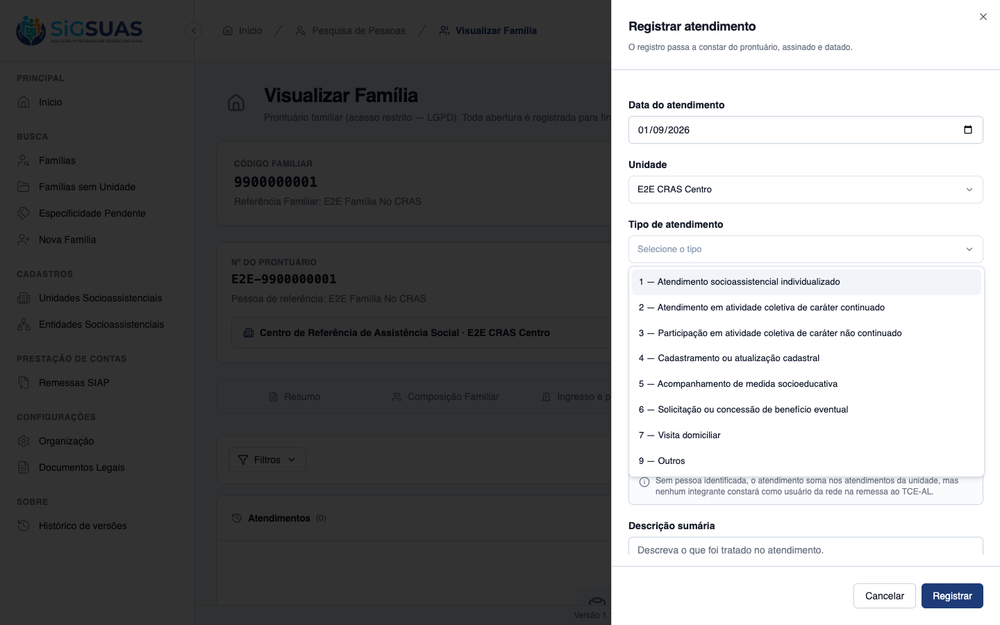
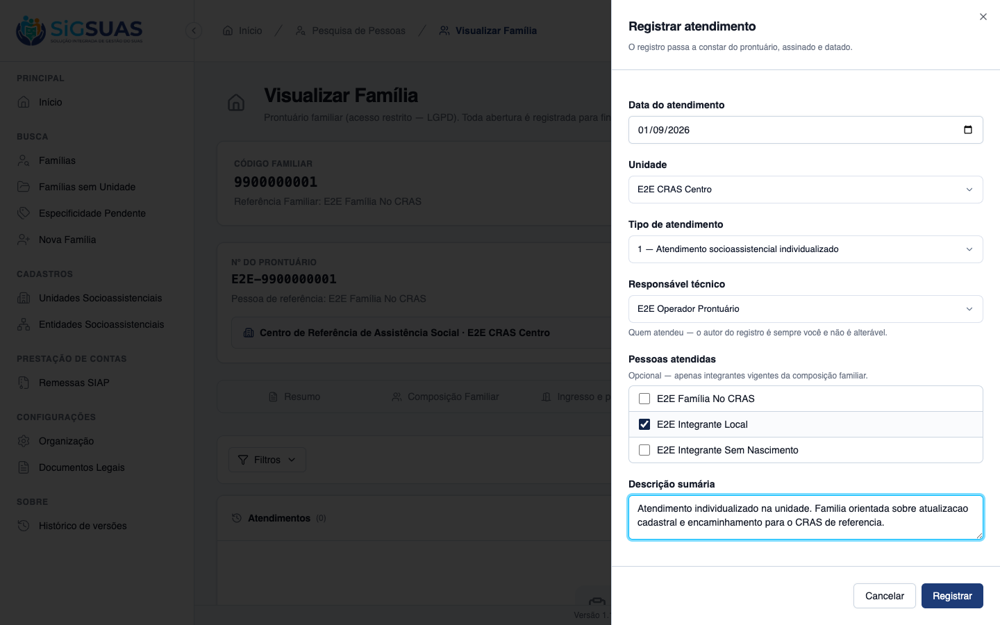
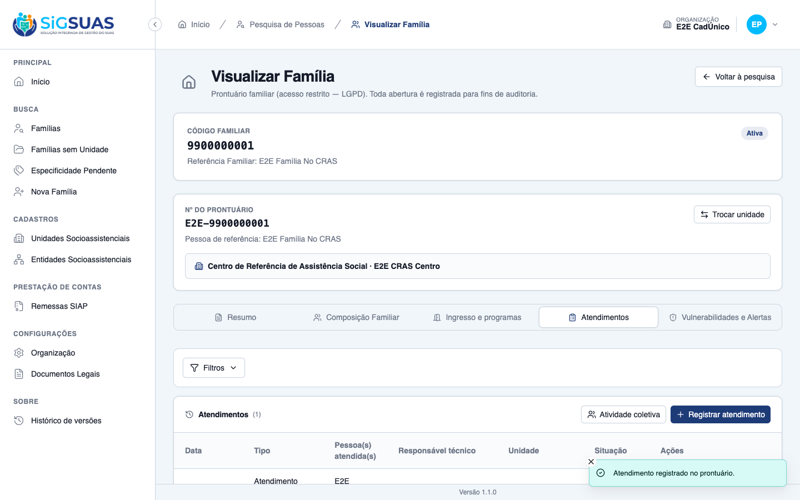
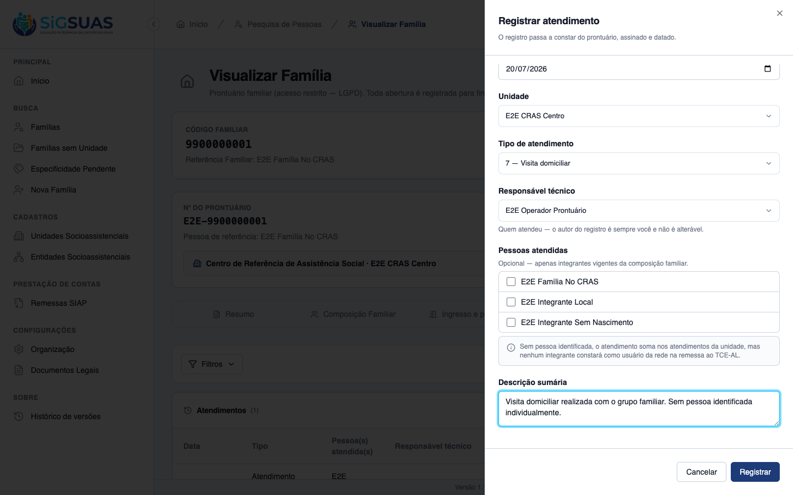
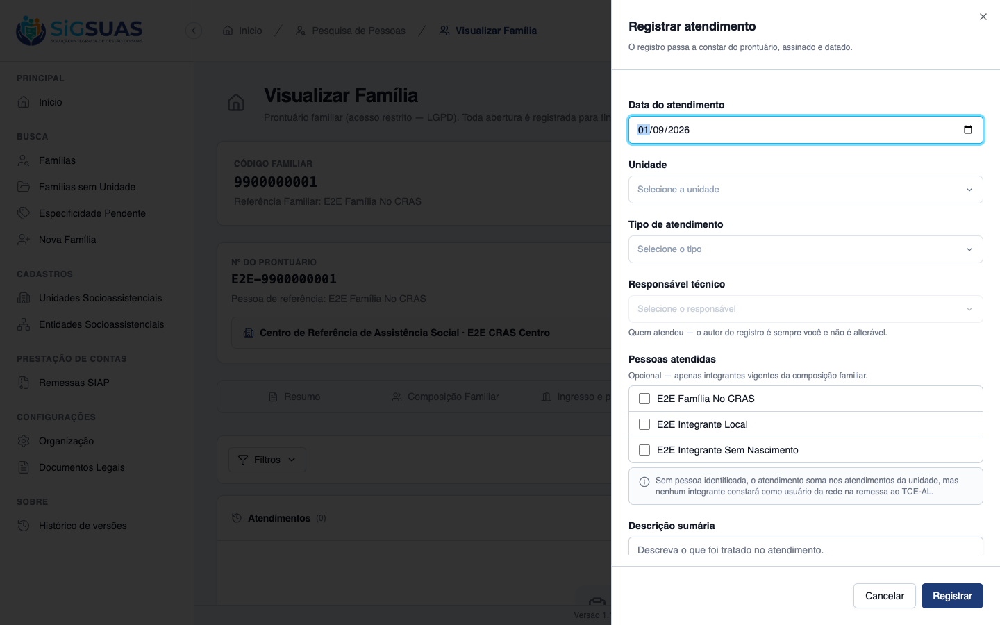
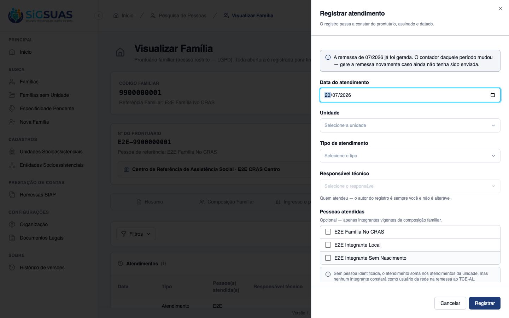
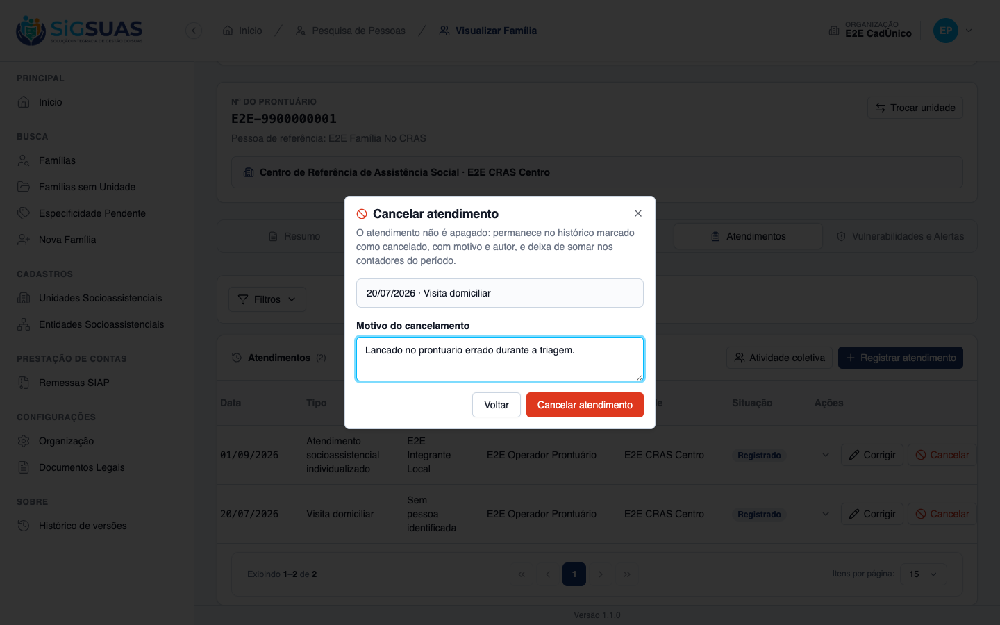
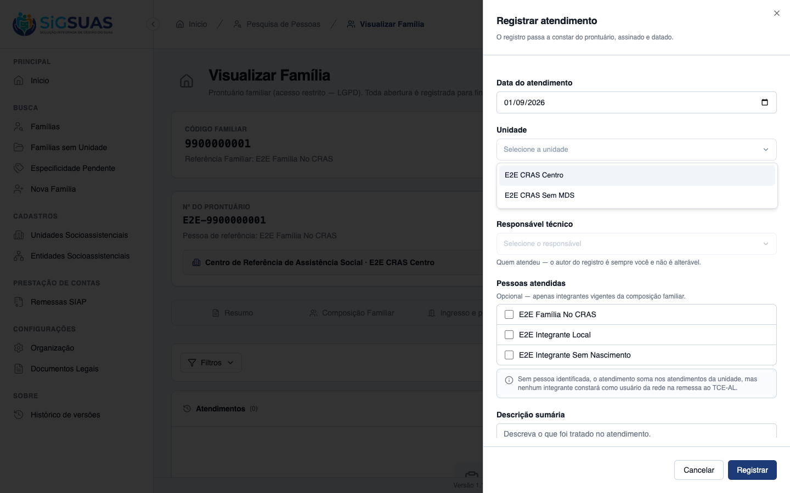
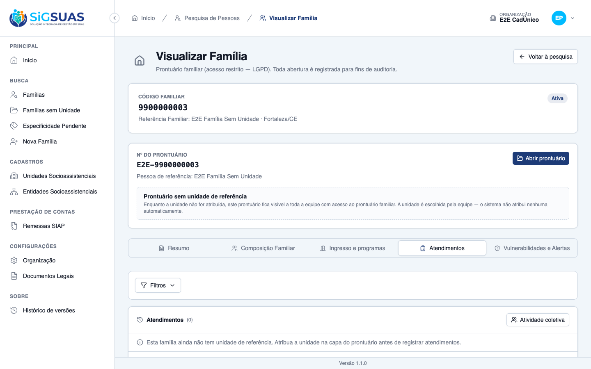

Critérios de Aceite — HU #10709
Resumo
13 critérios da HU mais 4 derivados na spec. 8 evidenciados dirigindo o Painel do Tenant, 3 de forma combinada e 6 pela suíte automatizada. Nenhum reprovado. Os critérios cobertos apenas por suíte são os que exigem massa que a tela levaria muitos passos para montar (lote com 3 famílias, responsável sem lotação na data) — não lacunas de implementação.
| CA | Critério | Status |
|---|---|---|
| CA01 | Registrar atendimento individualizado | ATENDIDO · navegador |
| CA02 | Atendimento da família, sem identificar pessoa | ATENDIDO · navegador |
| CA03 | Data futura é recusada | ATENDIDO · navegador + automatizado |
| CA04 | Lançamento retroativo em período já declarado | ATENDIDO · navegador |
| CA05 | Pessoa precisa ser integrante da família | ATENDIDO · navegador + automatizado |
| CA06 | Atividade coletiva gera um registro por família | ATENDIDO · automatizado |
| CA07 | Responsável técnico diferente do autor | ATENDIDO · navegador |
| CA08 | Responsável sem lotação vigente na data | ATENDIDO · automatizado |
| CA09 | Corrigir atendimento | ATENDIDO · automatizado |
| CA10 | Correção da descrição não expõe o conteúdo na auditoria | ATENDIDO · navegador + automatizado |
| CA11 | Cancelar em vez de excluir | ATENDIDO · navegador |
| CA11b | O cancelamento também avisa sobre a remessa | ATENDIDO · navegador |
| CA12 | Negativa por unidade declara o motivo | ATENDIDO · navegador |
| CA13 | Isolamento entre municípios | ATENDIDO · automatizado |
| CA14 | Família sem unidade de referência não recebe atendimento | ATENDIDO · navegador |
| CA15 | Lançamento em lote grava registros independentes | ATENDIDO · automatizado |
| CA16 | A edição revalida o trio inteiro | ATENDIDO · automatizado |
CA01 — Registrar atendimento individualizado ATENDIDO · navegador
Critério (Gherkin): Dado que sou Operacional do Tenant com o add-on LGPD, lotado no "CRAS Centro" E que a família é referenciada no "CRAS Centro" Quando eu registrar um atendimento de hoje, do tipo "Atendimento socioassistencial individualizado", identificando a integrante e descrevendo o que foi tratado Então o atendimento é salvo E consta do prontuário com a data, o tipo, a pessoa, a descrição, o responsável técnico e o autor do registro
Como foi testado: Login como Operacional (CPF 111.444.777-35), prontuário da família …f0001, aba Atendimentos → Registrar atendimento.
- O select de tipo traz os <b>8 tipos do instrumento</b>, com os códigos <b>1–7 e 9</b> — sem o 8 (catálogo da #10708).
- Salvo com <i>“Atendimento registrado no prontuário.”</i>
- Confirmado no banco: <code>data=01/09/2026 · tipo=1 · unidade=E2E CRAS Centro · status=registered · pessoas=1 · descrição=129 chars</code>.
- <b>Responsável</b> (profissional #5) e <b>autor</b> (usuário #12) gravados em colunas distintas.



CA02 — Atendimento da família, sem identificar pessoa ATENDIDO · navegador
Critério (Gherkin): Dado que realizei uma visita domiciliar à família, com o grupo familiar Quando eu registrar o atendimento sem identificar nenhuma pessoa Então o atendimento é salvo E a tela informa que ele soma nos atendimentos da unidade, mas não fará nenhum integrante constar como usuário da rede na remessa ao TCE-AL
Como foi testado: Registro de visita domiciliar sem marcar nenhuma pessoa na lista de integrantes.
- A tela declara a consequência, citando <b>“usuário da rede”</b>.
- O atendimento é salvo mesmo assim, e a linha do histórico exibe <b>“Sem pessoa identificada”</b>.

CA03 — Data futura é recusada ATENDIDO · navegador + automatizado
Critério (Gherkin): Dado que estou registrando um atendimento Quando eu informar uma data posterior a hoje Então o registro não é salvo E o sistema indica que não se registra atendimento que ainda não aconteceu
Como foi testado: Inspeção do campo de data no formulário e validação de backend na suíte.
- O input tem <code>max="2026-09-01"</code> — o navegador impede a data futura na origem.
- O backend recusa independentemente (regra <code>before_or_equal:today</code>), coberto no apêndice.

CA04 — Lançamento retroativo em período já declarado ATENDIDO · navegador
Critério (Gherkin): Dado que a remessa da referência 07/2026 já foi gerada Quando eu registrar um atendimento com data de 20/07/2026 Então o atendimento é salvo E o sistema avisa que o contador daquele período mudou e que a remessa precisa ser gerada novamente caso ainda não tenha sido enviada
Como foi testado: Com uma remessa completed de 07/2026 no banco, escolher a data 20/07/2026 no formulário.
- O aviso aparece <b>ao escolher a data</b>, antes de salvar: <i>“A remessa de 07/2026 já foi gerada. O contador daquele período mudou — gere a remessa novamente caso ainda não tenha sido enviada.”</i>
- É <b>não-bloqueante</b>: o atendimento é salvo, e o aviso reaparece como toast na resposta.
- A referência 08/2026, sem remessa gerada, <b>não</b> dispara aviso — a assimetria prova que o serviço não avisa por padrão.

CA05 — Pessoa precisa ser integrante da família ATENDIDO · navegador + automatizado
Critério (Gherkin): Dado que estou registrando um atendimento no prontuário da família Quando eu tentar identificar como pessoa atendida alguém que não integra a composição vigente dessa família Então o registro não é salvo E o sistema indica que a pessoa precisa constar da composição familiar
Como foi testado: Inspeção da lista de pessoas oferecidas no formulário + regra de backend na suíte.
- A tela oferece <b>somente os 3 integrantes ativos</b> da composição — pessoa de fora não é sequer selecionável.
- O backend recusa com 422 quem não integra a composição vigente (apêndice).
CA06 — Atividade coletiva gera um registro por família ATENDIDO · automatizado
Critério (Gherkin): Dado que realizei uma oficina com integrantes de três famílias Quando eu registrar a participação Então lanço um atendimento no prontuário de cada uma das três famílias E não existe registro único da atividade com as três famílias juntas
Como foi testado: Coberto pela suíte — montar três famílias na tela exigiria muitos passos sem ganho de evidência.
- O lote grava <b>N linhas independentes</b> numa transação; nenhuma coluna liga uma à outra.
- Família inválida no lote → <b>nenhuma</b> é gravada (tudo ou nada), com <code>invalid_families[]</code> na resposta.
Evidência por cobertura automatizada — ver Anexo.
CA07 — Responsável técnico diferente do autor ATENDIDO · navegador
Critério (Gherkin): Dado que estou digitando um atendimento realizado pela assistente social Ana Quando eu registrar indicando Ana como responsável técnica Então o atendimento consta com Ana como responsável E comigo como autor do registro E o autor não é alterável
Como foi testado: Observação do campo Responsável ao selecionar a unidade, e conferência das colunas no banco.
- Ao escolher a unidade, o campo <b>Responsável técnico</b> é pré-preenchido com o próprio usuário (RN07) e a lista oferece os profissionais lotados naquela unidade.
- No banco, <code>responsible_professional_id</code> e <code>created_by</code> são colunas <b>distintas</b>.
- O autor não é campo do formulário — é sempre quem lançou, e não é alterável.
CA08 — Responsável sem lotação vigente na data ATENDIDO · automatizado
Critério (Gherkin): Dado que estou registrando um atendimento de 10/08/2026 no "CRAS Centro" Quando eu tentar indicar como responsável um profissional cuja lotação naquela unidade só começou em 20/08/2026 Então o registro não é salvo E o sistema indica que o profissional não tinha lotação vigente na unidade naquela data
Como foi testado: Coberto pela suíte, com testes de fronteira do intervalo [start, end).
- A lista de responsáveis é filtrada pela lotação vigente <b>na data do atendimento</b>, não hoje.
- O backend revalida com a Rule <code>ProfessionalAssignedOnDate</code> — a tela não é a única guarda.
Evidência por cobertura automatizada — ver Anexo.
CA09 — Corrigir atendimento ATENDIDO · automatizado
Critério (Gherkin): Dado que registrei um atendimento com o tipo errado Quando eu corrigir o tipo Então a correção é salva E a trilha de auditoria registra a alteração, com autor e data
Como foi testado: Coberto pela suíte; a trilha resultante está evidenciada no CA10.
- A correção passa por <code>$model->save()</code>, o que mantém a trilha viva.
- A edição revalida o trio inteiro (data, unidade, responsável), não só o campo alterado.
Evidência por cobertura automatizada — ver Anexo.
CA10 — Correção da descrição não expõe o conteúdo na auditoria ATENDIDO · navegador + automatizado
Critério (Gherkin): Dado que corrigi a descrição sumária de um atendimento Quando eu consultar a trilha de auditoria Então consta que a descrição foi alterada, com autor e data E o conteúdo anterior e o novo NÃO aparecem na trilha
Como foi testado: Varredura do activity_log real depois de registrar, cancelar e alterar atendimentos pela tela.
- <b>Nenhuma</b> das iscas apareceu: nem o texto da descrição, nem o motivo do cancelamento, nem os nomes das colunas <code>description</code>/<code>cancel_reason</code>.
- <b>E a trilha não ficou vazia</b>: <code>attendance_type_id</code>, <code>attended_on</code>, <code>social_unit_id</code> e <code>status</code> estão lá.
- As duas metades importam — provar só a ausência passaria com uma trilha morta.
Evidência por cobertura automatizada — ver Anexo.
CA11 — Cancelar em vez de excluir ATENDIDO · navegador
Critério (Gherkin): Dado que lancei um atendimento por engano Quando eu cancelá-lo informando o motivo Então o atendimento não é apagado E permanece no histórico marcado como cancelado, com motivo e autor E deixa de somar nos contadores do período
Como foi testado: Ação Cancelar na linha do atendimento, com motivo obrigatório.
- O diálogo explica a regra ao usuário antes de confirmar.
- No banco: <code>status=cancelled</code>, com motivo e autor — e <code>deleted_at = NULL</code>. <b>O registro não foi apagado.</b>
- Continua visível no histórico, marcado; e sai da apuração (ver dossiê da #10711, CA04).


CA11b — O cancelamento também avisa sobre a remessa ATENDIDO · navegador
Critério (Gherkin): Dado que a remessa da referência 07/2026 já foi gerada E que existe um atendimento de 20/07/2026 Quando eu cancelar esse atendimento Então o cancelamento é salvo E o sistema avisa que o contador daquele período mudou
Como foi testado: Cancelamento do atendimento retroativo de 20/07/2026.
- O mesmo aviso do CA04 dispara <b>no cancelamento</b>.
- É o caso mais grave se ficasse silencioso: o contador do período muda <i>para menos</i> sem ninguém saber.
CA12 — Negativa por unidade declara o motivo ATENDIDO · navegador
Critério (Gherkin): Dado que sou Operacional do Tenant com o add-on LGPD, lotado apenas no "CRAS Centro" E que a família Souza é referenciada no "CREAS" Quando eu tentar registrar um atendimento para a família Souza Então o registro não é permitido E a tela informa que a família é referenciada em unidade onde não tenho lotação vigente, orientando procurar o gestor Master E não nomeia a unidade que atende a família
Como foi testado: Acesso ao prontuário da família …f0002, referenciada no CREAS, com o operador lotado apenas no CRAS Centro.
- A tela mostra <b>Acesso restrito</b>: <i>“Esta família é referenciada em uma unidade socioassistencial onde você não possui lotação vigente. Solicite o acesso ao gestor Master da sua organização.”</i>
- <b>A unidade não é nomeada</b> — varredura confirmou que a palavra “CREAS” não aparece na página.
- No formulário, o select de unidade também só ofereceu as <b>duas lotações do operador</b>; o CREAS não é opção.


CA13 — Isolamento entre municípios ATENDIDO · automatizado
Critério (Gherkin): Dado que sou usuário do município A Quando eu consultar ou registrar atendimentos Então alcanço somente famílias e unidades do município A
Como foi testado: Coberto por AttendanceIsolationTest em tests/Feature/TenantIsolation/.
- Família de outra organização devolve <b>404</b>, com corpo idêntico ao de uuid inexistente — não confirma existência.
- O <code>tenant_id</code> vem do header validado pelo <code>EnsureTenantScope</code>, não da query.
Evidência por cobertura automatizada — ver Anexo.
CA14 — Família sem unidade de referência não recebe atendimento ATENDIDO · navegador
Critério (Gherkin): Dado que a família foi importada do CadÚnico e ainda não tem unidade de referência Quando eu abrir o prontuário dela e tentar registrar um atendimento Então a ação de registrar não é oferecida E a tela orienta atribuir a unidade de referência primeiro
Como foi testado: Prontuário da família …f0003, sem unidade de referência.
- O botão <b>Registrar atendimento</b> está <b>invisível</b> (verificado por <code>offsetParent</code>).
- A tela orienta: <i>“Esta família ainda não tem unidade de referência. Atribua a unidade na capa do prontuário antes de registrar atendimentos.”</i>
- O backend reforça com 422 <code>family_without_unit</code>, valendo também para o lote.

CA15 — Lançamento em lote grava registros independentes ATENDIDO · automatizado
Critério (Gherkin): Dado que realizei uma oficina com três famílias Quando eu lançar em lote, preenchendo uma única vez data, tipo e descrição Então são gravados três atendimentos, um no prontuário de cada família E cancelar o de uma não afeta os outros dois
Como foi testado: Coberto pela suíte (ver CA06).
- Cada linha é editável e cancelável isoladamente.
- A tela de lote é <b>página própria</b>, não painel lateral — o seletor de famílias já é um drawer.
Evidência por cobertura automatizada — ver Anexo.
CA16 — A edição revalida o trio inteiro ATENDIDO · automatizado
Critério (Gherkin): Dado que um atendimento tem responsável cuja lotação terminou Quando eu corrigir apenas a data Então o registro não é salvo E o sistema indica que o responsável não tinha lotação vigente na nova data
Como foi testado: Coberto pela suíte.
- Mudar só a data pode invalidar um responsável que já estava lá — por isso a revalidação é do trio, não do campo.
Evidência por cobertura automatizada — ver Anexo.
Observações e ressalvas
Por que 6 critérios são cobertos por suíte e não por tela
CA06/CA15 (lote), CA08 e CA16 (lotação na data) exigiriam montar massa que a tela levaria dezenas de passos para produzir — três famílias participantes, um profissional com lotação encerrada numa data específica —, sem que o print acrescentasse informação ao que a suíte já prova. CA09 e CA13 são regra de backend. Nenhum deles é lacuna de implementação: os 153 testes do apêndice cobrem os quatro.
O que foi provado no banco, não só na tela
Três afirmações desta HU só valem se o dado confirmar, e por isso foram verificadas por consulta direta: o cancelamento manteve deleted_at = NULL (não é soft delete); responsável e autor ficaram em colunas distintas; e a trilha de auditoria não contém o texto da descrição nem do motivo — mas contém os campos estruturados.
Anexo — Cobertura automatizada (Pest — fase F1: 139 testes / 700 asserções, mais 14 testes / 119 asserções de permissões; todos verdes)
PASS Tests\Unit\Models\AttendancePersonTest ✓ it is tenant-scoped, soft-deletable, uuid-routed and audited 0.62s ✓ it audits ONLY ids — no name, no text (§6.2) 0.02s ✓ it keeps person_id coherent with the family member (P-A) and blocks… 0.23s PASS Tests\Unit\Models\AttendanceTest ✓ it is tenant-scoped, soft-deletable, uuid-routed and audited 0.03s ✓ it casts attended_on as date and status as the AttendanceStatus enu… 0.04s ✓ it configures the activity log with ONLY the structured fields — ne… 0.03s ✓ it reports isCancelled by STATUS, with deleted_at untouched (RN09) 0.04s PASS Tests\Unit\Models\AttendanceTypeTest ✓ it has correct fillable, casts and defaults 0.02s ✓ it uses soft deletes, HasUuid, LogsActivity and resolves by uuid 0.02s ✓ it is a GLOBAL lookup — never tenant-scoped (RN04/RN10) 0.03s ✓ it has no global scope of is_active — history and remittance never… 0.04s ✓ it keeps the remittance rule as data, cast to the enum (RN03/D03) 0.02s ✓ it accepts NULL as a legitimate remittance counter value (CA03) 0.02s ✓ it enforces unique code — even against soft-deleted rows (RN02) 0.02s ✓ it configures the activity log with the audited fields (RN07/§14) 0.02s PASS Tests\Feature\Api\AttendanceTypeControllerTest ✓ it lists attendance types exposing uuid and the remittance rule — n… 0.09s ✓ it shows the remittance counter with its label (CA02) 0.03s ✓ it shows NULL counter as an explicit "no specific counter" label (C… 0.03s ✓ it creates an attendance type with the code informed by the admin (… 0.05s ✓ it rejects a duplicate code (CA04) 0.04s ✓ it requires code and name — the code is never generated (CA04) 0.03s ✓ it rejects a remittance counter outside the enum 0.03s ✓ it audits the change of the remittance rule with old and new values… 0.04s ✓ it exposes the audit trail with causer and pagination (CA09) 0.04s ✓ it soft deletes an attendance type 0.05s ✓ it bulk deactivates and bulk activates attendance types, logging th… 0.03s ✓ it filters actives for the new-entry select, and returns inactives… 0.03s ✓ it filters by remittance_counter 0.02s ✓ it blocks write without permission 0.03s ✓ it refuses to delete a type in use with 422, guiding deactivation (… 0.03s ✓ it still soft deletes a type NOT referenced by any consumer (CA05) 0.03s ✓ it refuses to delete a type referenced by a REAL attendance — the p… 0.04s ✓ it blocks the bulk destroy through the REAL production consumer too… 0.04s ✓ it ignores a registered consumer whose table does not exist yet (D0… 0.03s ✓ it bulk destroy is ATOMIC: one item in use blocks all and is identi… 0.03s ✓ it rejects soft-deleted uuids in every bulk action at validation ti… 0.04s ✓ it bulk destroys unused types, logging the bulk event with author (… 0.04s ✓ it gives the admin_operador read-only access — every write is 403 (… 1.54s ✓ it lets the ADMIN role exercise all eight abilities end to end 1.42s ✓ it rejects client-guard tokens on every write route with 401, creat… 0.04s ✓ it keeps the shared read alive for the client guard — the tenant se… 0.03s PASS Tests\Feature\Api\Client\AttendanceControllerTest ✓ it registers an individual attendance with person, responsible and… 0.14s ✓ it registers a family-level attendance with NO person — zero pivot… 0.08s ✓ it refuses a future date (CA03/RN04) 0.08s ✓ it accepts TODAY at 23h in the app timezone — the boundary never re… 0.09s ✓ it saves a retroactive attendance in a remitted month AND returns t… 0.09s ✓ it does NOT warn when the month remittance is pending or failed (CA… 0.08s ✓ it refuses a person from ANOTHER family and an UNLINKED member (CA0… 0.10s ✓ it refuses the SAME person twice in one attendance (§6.2) 0.08s ✓ it derives person_id from the family member and never accepts it fr… 0.08s ✓ it records the responsible professional apart from the author, and… 0.09s ✓ it refuses a responsible whose assignment only started AFTER the at… 0.09s ✓ it refuses a unit where the operational user has NO assignment on t… 0.08s ✓ it lets the MASTER register in any unit of the tenant, without assi… 0.08s ✓ it corrects the attendance type in place (CA09/RN08) 0.09s ✓ it revalidates the WHOLE trio on edit: changing only the date inval… 0.09s ✓ it syncs people on edit per model: adds and removes without sync()… 0.12s ✓ it warns for BOTH the old and the new month when a remitted attenda… 0.11s ✓ it cancels with reason, preserving the row and leaving the counters… 0.11s ✓ it refuses to EDIT a cancelled attendance — cancelled is terminal (… 0.10s ✓ it requires the cancel reason (CA11/RN09) 0.08s ✓ it warns about the generated remittance ALSO on cancellation (CA11b… 0.08s ✓ it refuses to register for a family WITHOUT a reference unit — 422… 0.08s ✓ it keeps social_unit_id as a SNAPSHOT: transferring the family does… 0.08s ✓ it registers ONE independent attendance per family in the batch (CA… 0.10s ✓ it writes NOTHING when ONE family of the batch is invalid — and ide… 0.08s ✓ it treats a family of ANOTHER tenant in the batch as not found — wi… 0.09s ✓ it rejects people in the batch — collective activity does not ident… 0.07s ✓ it serves units, responsibles, ACTIVE types and the month warning t… 0.09s PASS Tests\Feature\Api\Client\AttendanceIndexTest ✓ it lists attendances chronologically by attended_on, newest first,… 0.09s ✓ it breaks same-day ties by created_at DESC then id DESC — the order… 0.08s ✓ it paginates stably when a batch put five attendances on the same d… 0.09s ✓ it places a retroactive entry in its chronological position, not at… 0.07s ✓ it keeps the cancelled attendance visible, marked, with reason and… 0.08s ✓ it filters by period on the attendance date (CA05/RN04) 0.08s ✓ it rejects an inverted period (to before from) 0.07s ✓ it filters by attendance type (CA06) 0.07s ✓ it keeps attendances of a deactivated type visible AND filterable (… 0.08s ✓ it filters by responsible professional (RN04) 0.07s ✓ it filters by status when the user asks — never by default (RN03) 0.08s ✓ it shows attendances from EVERY unit, identified per line, even whe… 0.08s ✓ it refuses a sort parameter — chronological order is the instrument… 0.08s ✓ it denies the history with the same record cut, naming the reason b… 0.10s ✓ it treats a family from another tenant as nonexistent (CA10/RN09) 0.08s ✓ it writes ZERO activity_log rows for listing, filtering and paginat… 0.09s ✓ it runs a constant number of queries regardless of how many attenda… 0.11s ✓ it keeps the attended person on the line after the family member li… 0.08s PASS Tests\Feature\Api\Client\AttendanceReportTest ✓ it derives the four counters per unit and the total includes types… 0.09s ✓ it declares the unavailable counters in the payload — value null, a… 0.08s ✓ it excludes cancelled attendances from the report while they remain… 0.09s ✓ it counts a retroactive attendance in the month it happened, not th… 0.09s ✓ it reflects a type correction on the next query and stores nothing… 0.10s ✓ it reports attendances without an identified person separately, via… 0.08s ✓ it scopes the Operacional to units with an assignment in force TODA… 0.09s ✓ it shows the master every unit of the tenant, and a unit without mo… 0.07s ✓ it never leaks citizen data in the serialized payload — no name, no… 0.08s ✓ it keeps counting past attendances of a type inactivated in the Glo… 0.07s ✓ it narrows the report to a single unit when social_unit_uuid is giv… 0.07s ✓ it keeps unit_count at the Operacional full scope when filtering on… 0.09s ✓ it rejects with a named 422 a unit outside the user scope — never a… 0.08s ✓ it rejects an out-of-range reference month with the SIAP named mess… 0.09s ✓ it denies the Operacional without the manual grant — the restricted… 0.10s ✓ it denies a granted user without an ACTIVE professional bond in the… 0.10s PASS Tests\Feature\Console\SyncPermissionsTest ✓ it keeps attendance-types write abilities out of the client guard r… 1.47s ✓ it grants the Operacional Global read-only access to attendance typ… 1.47s ✓ it keeps attendance-reports.view out of the default CLIENT_OPERADOR… 1.47s PASS Tests\Feature\Dashboard\AttendanceTest ✓ it returns two contiguous 12-point series from source_registered_at… 0.12s ✓ it counts a family in different months across the two independent s… 0.06s ✓ it excludes families with a null date from the respective series (C… 0.06s ✓ it matches the Painel 2 monthly evolution point by point (RN07) 0.08s ✓ it recalculates for a neighborhood, covering only geocoded families… 0.07s ✓ it returns two 12-point zero series when the scope has no families… 0.05s ✓ it returns 422 for a neighborhood_uuid outside the tenant municipal… 0.05s ✓ it denies the panel to the base operator without the dedicated role 0.05s ✓ it grants the panel to the Master without any add-on role 0.05s PASS Tests\Feature\Family\AttendanceAuditTest ✓ it NEVER leaks the description nor the cancel reason into the activ… 0.09s ✓ it never echoes the description in validation messages nor in denia… 0.11s ✓ it audits people changes per model — created and deleted events wit… 0.10s PASS Tests\Feature\Seeders\AttendanceTypeSeederTest ✓ it seeds the eight attendance types of the instrument — codes 1..7… 0.03s ✓ it carries the remittance rule of RN03 as data — three counters, fi… 0.03s ✓ it is idempotent — running the seeder twice does not duplicate nor… 0.03s PASS Tests\Feature\Services\AttendanceEligibilityServiceTest ✓ it lists for the operational user only the units with an assignment… 0.06s ✓ it includes the unit whose assignment STARTS exactly on the date an… 0.05s ✓ it returns no unit for an operational user whose professional link… 0.04s ✓ it lets the Master select ALL non-deleted units of the tenant, with… 0.05s ✓ it answers canRegisterInUnit per unit and date for the operational… 0.05s ✓ it lists as selectable responsibles only professionals assigned to… 0.06s ✓ it orders selectable responsibles deterministically by the user nam… 0.05s ✓ it keeps an INACTIVE professional eligible as responsible for a ret… 0.04s ✓ it answers isResponsibleEligible on the [start, end) boundaries and… 0.05s PASS Tests\Feature\TenantIsolation\AttendanceIsolationTest ✓ it answers 404 for a family of ANOTHER tenant with the SAME body as… 0.09s ✓ it answers 404 when the attendance belongs to ANOTHER family — scop… 0.09s ✓ it answers 403 unit_not_assigned for a family of another unit — WIT… 0.09s ✓ it answers 403 no_active_assignment when the professional has no as… 0.08s ✓ it answers 403 for the operator WITHOUT the LGPD add-on — the class… 0.09s ✓ it scopes attendances by tenant through the BelongsToTenant global… 0.08s PASS Tests\Feature\TenantIsolation\AttendanceReportIsolationTest ✓ it shows the tenant A master only tenant A units and numbers (CA12/… 0.07s ✓ it rejects a tenant B unit used as filter with the same named 422 —… 0.07s PASS Tests\Feature\TenantIsolation\DashboardAttendanceIsolationTest ✓ it never counts families from another tenant in the attendance pane… 0.06s Tests: 139 passed (700 assertions) Duration: 18.03s ===== SyncPermissionsTest (CA15 — contrato da permissão) ===== PASS Tests\Feature\Console\SyncPermissionsTest ✓ it extracts the can: abilities declared by controllers from the rou… 0.63s ✓ it keeps full parity with the previous hardcoded permission set (no… 0.03s ✓ it seeds permissions for both guards and assigns them to roles 1.42s ✓ it runs permissions:sync idempotently without duplicating permissio… 2.45s ✓ it prunes orphan permissions not present in the registry 2.62s ✓ it does not write anything on --dry-run 0.10s ✓ it does not assign RESTRICTED_PERMISSIONS to any role 1.34s ✓ it permissions:sync --coverage fails when an authenticated route ha… 1.36s ✓ it never mirrors any platform-versions ability into the client guar… 1.36s ✓ it never mirrors any cbo-access-profiles ability into the client gu… 1.34s ✓ it grants the Operacional Global read-only access to the CBO map (H… 1.40s ✓ it keeps attendance-types write abilities out of the client guard r… 1.48s ✓ it grants the Operacional Global read-only access to attendance typ… 1.31s ✓ it keeps attendance-reports.view out of the default CLIENT_OPERADOR… 1.37s Tests: 14 passed (119 assertions) Duration: 18.83s